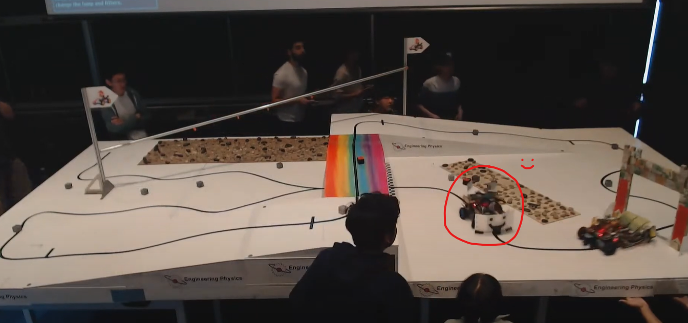
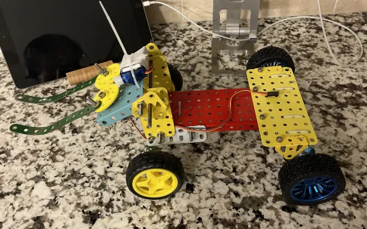

The Competition
Every year in the summer term, 2nd year Engineering Physics students take 6 weeks of 6 courses,
followed by a 6 week project course called ENPH 253, Introduction to Instrument Design.
In this course, we group up into teams of 4 and are tasked with designing and creating a fully autonomous robot
capable of driving around an obstacle course. The highlight of the course is at the finale, the competition where all teams
face off in front of a live audience.
This year's competition (and previous years) can be found on YouTube, take a look at ours
(we race at around 1:07:00 and 1:33:00, our robot is the one with the big smiley face bumper!).
Embeds don't work unfortunately due to the copyrighted music in the background, so please click on the image below to watch the video on YouTube!

The Rules
Every year's competition has a different theme like Indiana Jones or Avengers, and ours was Mario Kart!
The goal was simple, race around this track in the 2 minute timeframe and collect as many points as possible!
The courserunners (our program and lab directors) also changed the competition this year; previously only one robot
ran on the track at a time. Our competition would instead be a 1v1 race against another team's robot, so collisions were possible (though any violent tactics were quickly banned to avoid a robot bloodbath of sorts...)
In the video, you can get a better look at the final track and watch the robots navigate. Here's the map we were given during our design phase (the blue rectangles are ramps up to 6" in elevation):

As you might notice, there are several ways to collect points; coins on the zipline and blocks placed on the track each provide +1 point. Every lap completed is +3 points. Already, there are major design choices at play, as each team must decide how to best make use of the 2 minutes; prioritize item-based points, or speeding through laps?
There are also several methods of shortcuts possible. The main method of travel we were taught was tape following using IR sensors (TCRT5000s to be specific). These can tell the robot when it is on or off tape, which, combined with PID code and the power of the Bluepill STM-32s we were provided, allow us to navigate. Some teams instead used image-recognition to navigate, others hard-coded the directions for the robot since we were allowed to test on the surface. So, following the black-tape path was not required; teams could try to take the zipline and collect those coins, or follow the IR sensor placed at the end of the surface to take a straight-line path past the finish line. More details about all the competition rules can be found on this document, if you're interested!
Our Initial Plan
During our design phase, we planned to build a robot that would drive using tape sensors, pick up blocks with a claw and jump off the ramp as a shortcut. The slides to our initial proposal are below (graphics I designed with the Google Slides shapes feature, which offers surprising amounts of versatility!):
 Also seen in the slides, I made a rough claw prototype with an Arduino kit at home and also a chassis design with spare parts to get a sense of the structure layout.
Also seen in the slides, I made a rough claw prototype with an Arduino kit at home and also a chassis design with spare parts to get a sense of the structure layout.

Production
Most teams divided each member into mechanical, electrical and software roles; I took on a more mech-oriented role during production and also helped with any other tasks in between.
I worked on a CAD model of our robot alongside my teammate Daniel, who also took on the mechanical role and was responsible for designing the steering system of our robot! We used Onshape
and